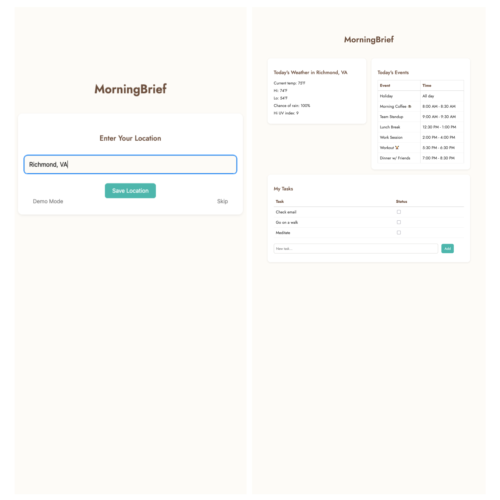
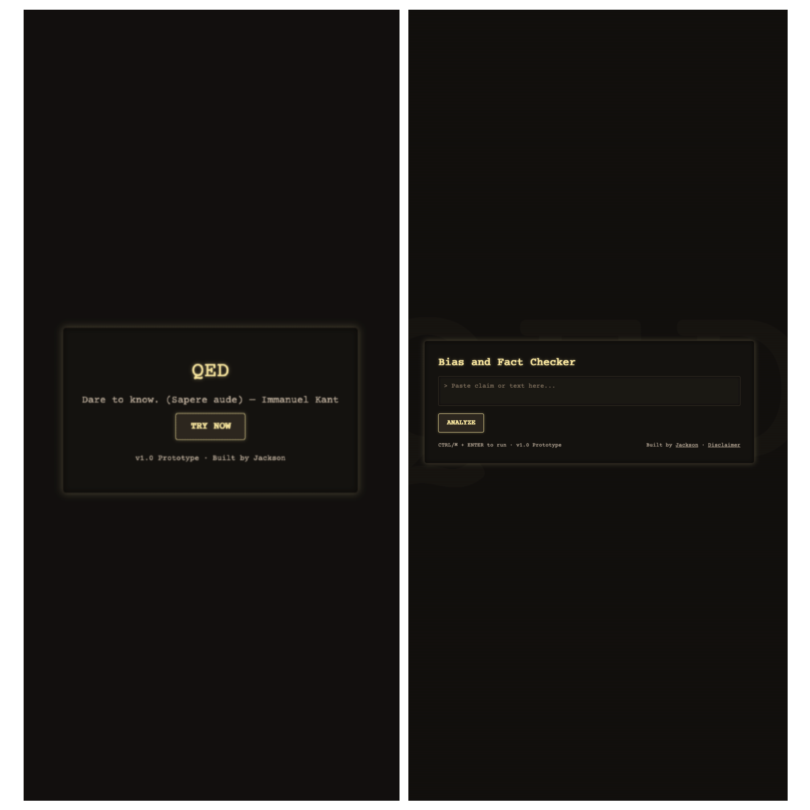
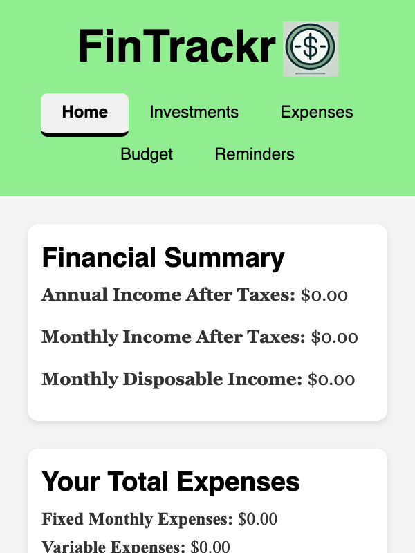

Projects
MorningBrief
MorningBrief is a full-stack web application providing a personalized daily overview. It integrates APIs like Visual Crossing (weather) and Google Calendar (events) and now features a redesigned, modern UI built with responsive components. Users can track tasks, view upcoming events, and check weather forecasts in one place. The project demonstrates frontend development, third-party API integration, and a polished UX.

QED – Bias & Fact Checker
QED is an AI-powered fact and bias checker designed to analyze text and return fact-based, unbiased insights. Built with Next.js (frontend), FastAPI (backend), and Google Gemini API, the app takes user-submitted input and produces analysis on accuracy, potential bias, and credibility of claims. Future plans include support for video/podcast content, visual bias breakdowns, and developer tools. This project highlights full-stack development, API integration, and applied AI for information reliability.

FinTracker
FinTracker is a web application designed to streamline personal financial management by providing tools for tracking expenses, setting budgets, and visualizing financial data. The application is built with modern web technologies, featuring a responsive design and dynamic data rendering for real-time insights. Its modular architecture ensures maintainability and scalability, making it an efficient solution for individual financial planning.
